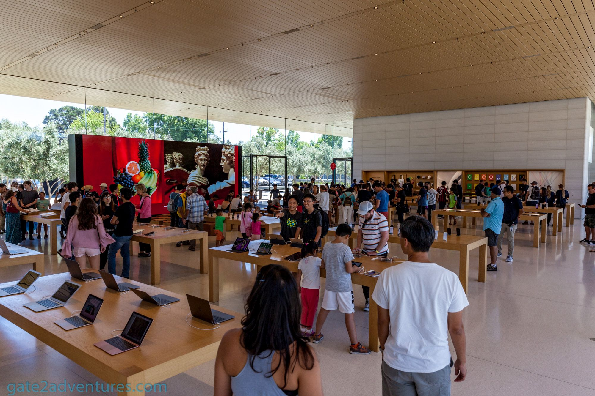

Istorijat
Kako je nastao Apple?
Apple je osnovan 1976. godine u Kaliforniji. Kompaniju su osnovali Steve Jobs, Steve Wozniak i Ronald Wayne. Njihova početna ideja bila je da personalni računar približe običnim korisnicima, a ne samo stručnjacima i velikim kompanijama.
U vreme kada su računari bili skupi, komplikovani i često namenjeni profesionalcima, Apple je želeo da tehnologiju učini razumljivijom. Zbog toga je od samog početka naglašavao jednostavnost, praktičnost i bolji odnos između čoveka i računara.
Veliki značaj za razvoj kompanije imao je Macintosh, računar koji je korisnicima približio grafički interfejs i rad pomoću miša. Time je Apple pokazao da računar ne mora da bude samo tehnički alat, već uređaj koji može biti intuitivan i prijatan za svakodnevno korišćenje.
Razvoj brenda
Od računara do globalnog tehnološkog simbola
Tokom vremena Apple se razvio iz male kompanije za personalne računare u globalni tehnološki brend. Prepoznatljivost kompanije ne zasniva se samo na uređajima, već i na načinu na koji su ti uređaji predstavljeni korisnicima.
Posebno važan trenutak bio je povratak Steve Jobs-a u kompaniju krajem devedesetih godina. Nakon toga Apple je predstavio proizvode koji su snažno uticali na tržište: iMac, iPod, iPhone i iPad.
Apple danas spaja hardver, softver, dizajn i usluge. Zbog toga se njegovi proizvodi često ne posmatraju samo kao tehnički uređaji, već kao deo određenog stila korišćenja tehnologije.

Sedište kompanije
Apple Park
Apple Park je glavno sedište kompanije Apple i nalazi se u gradu Cupertino u Kaliforniji. Kompleks je poznat po kružnom obliku, velikim staklenim površinama i modernom arhitektonskom stilu.
Ovaj prostor nije zamišljen samo kao kancelarijska zgrada, već kao radno okruženje koje podstiče saradnju, kreativnost i razvoj novih ideja. Veliki deo kompleksa čine zelene površine, staze i drveće, pa se tehnologija i priroda povezuju u istom prostoru.
Apple Park dobro prikazuje način na koji Apple pristupa dizajnu: oblik, funkcija, materijali i prostor treba da deluju skladno. Zbog toga se sedište kompanije često posmatra kao simbol Apple filozofije.
Osnivač
Steve Jobs
Steve Jobs bio je jedan od suosnivača kompanije Apple i jedna od najuticajnijih ličnosti u istoriji moderne tehnologije. Bio je poznat po tome što je insistirao da proizvodi budu jednostavni, korisni i vizuelno privlačni.
Jobs nije posmatrao tehnologiju samo kroz specifikacije. Smatrao je da je važno kako se korisnik oseća dok koristi proizvod, koliko lako razume sistem i koliko mu uređaj pomaže u svakodnevnom radu.
Njegov uticaj vidi se u proizvodima kao što su Macintosh, iPod, iPhone i iPad. Njegove prezentacije bile su poznate po jednostavnom objašnjavanju ideja i po tome što su proizvodi predstavljani kao rešenja za konkretne potrebe korisnika.

Filozofija brenda
Zašto je Apple prepoznatljiv?
Dizajn
Apple koristi čist i jednostavan vizuelni stil. Uređaji su prepoznatljivi po minimalizmu, skladnim bojama i pažljivo biranim materijalima.
Jednostavnost
Veliki deo Apple filozofije zasniva se na tome da tehnologija bude razumljiva korisniku i da se svakodnevni zadaci obavljaju što jednostavnije.
Identitet
Apple proizvodi imaju prepoznatljiv izgled, način predstavljanja i osećaj korišćenja, zbog čega se brend lako razlikuje od konkurencije.
Zanimljivosti
Zanimljive činjenice o Apple-u
- Prvi Apple računar, Apple I, nije imao kućište, tastaturu ni monitor kao današnji računari. Prodavao se kao osnovna ploča koju je korisnik morao dodatno da opremi.
- Naziv „Apple” izabran je delom zato što je zvučao jednostavno, prijateljski i drugačije od tadašnjih tehnoloških kompanija koje su često imale komplikovana imena.
- Macintosh iz 1984. godine bio je jedan od računara koji su popularizovali grafički korisnički interfejs i rad pomoću miša.
- iPod je promenio način slušanja muzike, jer je omogućio korisnicima da veliki broj pesama nose sa sobom u malom uređaju.
- Prvi iPhone predstavljen je 2007. godine i spojio je telefon, internet pregledač, muzički plejer i ekran osetljiv na dodir u jedan uređaj.
- Apple posebnu pažnju posvećuje pakovanju proizvoda, jer i samo otvaranje kutije treba da ostavi utisak premium iskustva.
- Apple Store prodavnice su dizajnirane veoma jednostavno, sa mnogo otvorenog prostora, kako bi proizvodi bili u centru pažnje.